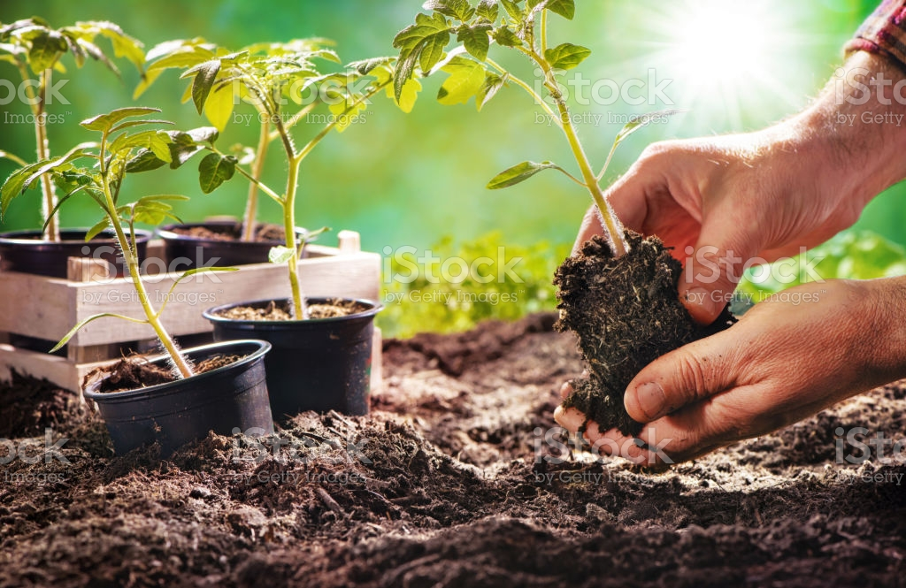
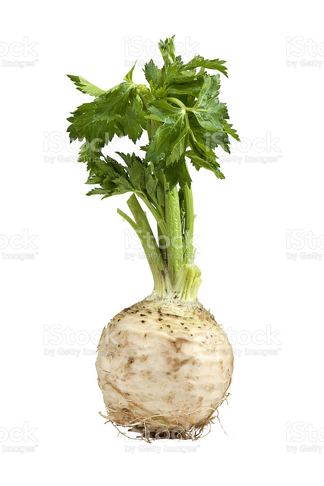
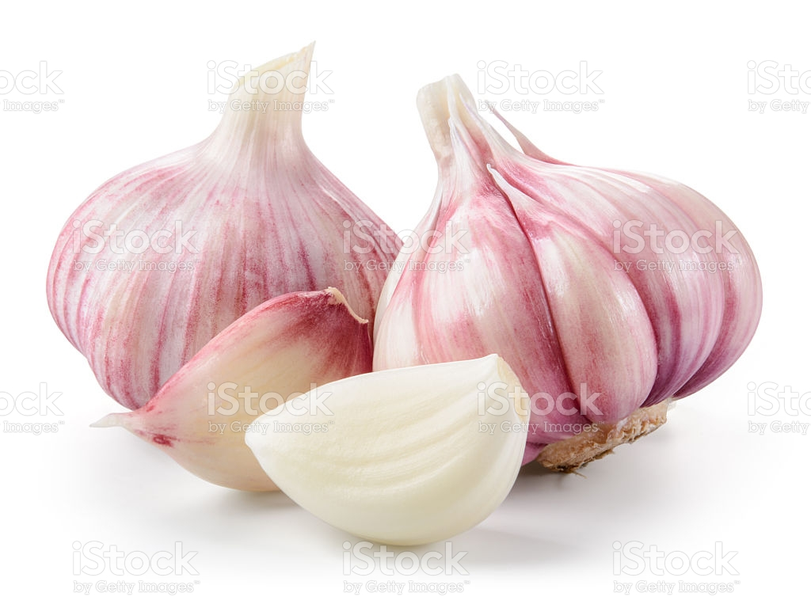
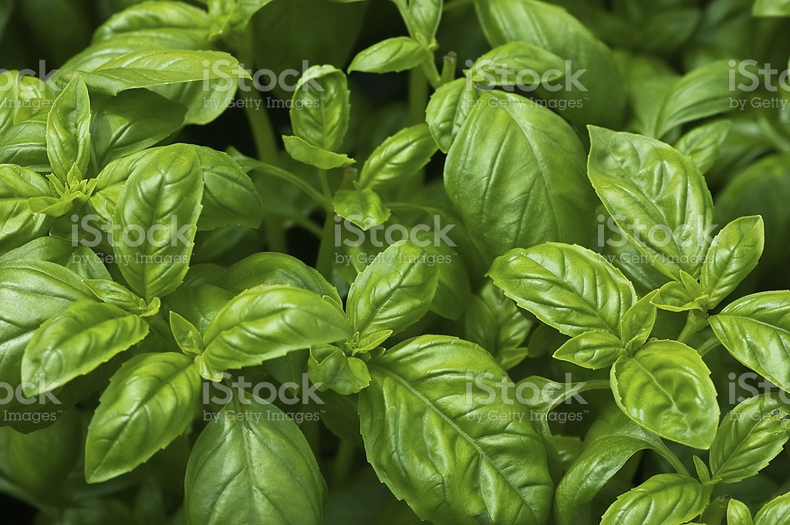

Paradicsomtermesztés a házikertben.
(A cikk az internetről összeollózott gyakorló oldal)
A régebben szerelemalmának nevezett paradicsom a burgonya rokona. Mindkettő a burgonyafélék családjába tartozik. Ennek a családnak a tagja a zöld- és fűszerpaprika és a padlizsán is.
A paradicsom termése bogyó. A bogyótömege 15-300 g között változik. A paradicsom bogyó formája is változatos: lehet lapított, kissé lapított, gömb, ovális, szív, szögletes, körte, szilva vagy hosszúkás alakú. A friss fogyasztású fajták általában kissé lapítottak, és a gömb alak a jellemző rájuk. A bogyó színe rendszerint piros, de vannak sárga és narancsszínű, bordó fajták is.
A paradicsom gazdag antioxidáns vegyületekben, melyek közül a legfontosabbak: a karotinoidok, a polifenolok és a C-vitamin.
1. Magvetés, palántázás

"Paradicsompalánta"
A magvetés ideje március közepe. A palántaültetés ideje április vége. Egy négytagú család igényeit 25-30 palánta kielégíti.
2. A paradicsom fényigénye
A palántákat olyan helyre ültesd, ahol legalább 8 óra hosszat éri a nap. Ha rosszabb körülmények közé kerül, csökken a terméshozam.
3. A paradicsom talajigénye
A paradicsom a szerves anyagokban gazdag, jó vízgazdálkodású talajt kedveli. De szabadföldbe ültetve a laza és a kötöttebb talajokat is jól bírja. A semleges körüli pH az optimális számára. Konténerben termesztett paradicsom esetén használjunk földkeveréket. Ajánlható a Florasca Bio Vegasca földkeverék. Sikerrel nevelhetsz benne tápkockás, sima tűzdelt és tűzdeletlen palántát. Eredményesen használhatod a zöldségfélék hajtatásában, talajhejettesítőként, edényben nevelt zölségekhez is.
4. Paradicsompalánták ültetése
"Palántázás"
A paradicsompalántákat nem csak szabad földbe, hanem edénybe vagy ültetőzsákba is ültetheted.
A palánták kiültetése előtt dolgozz a talajba kevés keserűsót, amiről a biokertész úgy tartja, hogy a palánták egészségesebbek lesznek és jobban feljődnek. A palánták alsó leveleit csípd le. A palántákat mélyen ültesd, ugyanis a növényke a száron is képes gyökereket fejleszteni, ami segíti a tápanyagellátását. Azonban az alsó leveleknek tilos a talajhoz érniük, mert ez kedvez a gombabetegségek terjedésének. Miután a zsúfolt ültetés kedvez a gombabetegségek kialakulásának, legalább 50-70 cm távolságra ültesd őket egymástól, hogy a levegő jól átjárja, és a lombozat ne maradjon hosszasan vizes. Így védekezhetsz a gombafertőzések ellen. Ha sorokba ültetsz, a javasolt sortávolság a nagy fajták esetében 1-1,5 m. A folyton növő fajták esetében ajánlott mindjárt a kb. 2 m magas karókat is kirakni.
Ezt követően a palántákat zsurló vagy csalánlével öntözd be, ezzel is biztosítva, hogy a fejlődő növények minél ellenállóbbak legyenek. Az esetleges tavaszi fagyok ellen földdel vedd körbe a palántákat, amit a fagyok elmúltával le lehet bontani. Ezt hívják felcsirkézésnek.
5. Paradicsom társnövényei
"Zeller"
"Fokhagyma"
"bazsalikom"
Egy ajánlott elrendezés: a paradicsom palánták közé ültess bazsalikomot (a fotón zöld levelű bazsalikom látható), a kettő közé pedig zellert. A bazsalikom jó ízt ad a paradicsomnak, és véd a lisztharmat ellen. A zeller illatát a kártevők viselik rosszul, tehát riasztólag hat. Jó védőnövénye a borágó is.
Ami jól érzi magát mellette a káposztafélék, ezeket a tövek közé lehet ültetni, zellerrel kombinálva még hatásosabb is, hiszen a zeller, mint szó volt róla a kártevőket riasztja, így a káposztalepkét is. Más jó szomszédja a bab. Ha középre kerül a paradicsom a zellerrel és a bazsalikommal, akkor a két szélére kerülhet a bab. A bab növeli a talaj nitrogéntartalmát, ezzel növeli a paradicsom tápanyagellátását.
6. Paradicsom öntözése
A kötődés és bogyónövekedés ideje kritikus. Soha ne hagyd a talajt teljesen kiszáradni, öntözd rendszeresen. Az öntözővizet a paradicsom tövéhez juttasd. Bevált házi módszer szerint áss agyagedényt a talajba közvetlenül a paradicsom mellé úgy, hogy az edény szája a talajszinten legyen. Ahonnan öntözéskor az agyagedény elvezeti a vizet a gyökerekhez. Figyelem! Mázas edény nem jó!
7. Paradicsom mulcsozása
Egy réteg szalma, vagy más szerves talajtakaró a talajt nedvesen tatja, és gátolja a gyomosodást. A talajból a kórokozók, spórák növényre jutását szintén nehezíti. A mulcsozás biztosítja a megfelelő talajhőmérsékletet is, amire a paradicsom meglehetősen igényes. A mulcs véd a kihülés és a túlzott felmelegedéstől is.
8, Paradicsom tápanyag ellátása
Ha a talajelőkészítés során a talajba komposztott, érett istállótrágyát dolgoztál bele, házikerti körülmények között nincs szükség fejtrágyázásra. Bio kultúrák használhatják a Viano paradicsom szerves tápot, amelyet ültetéskor keverhetsz a talajhoz, és később, a termő időszakban tápanyagutánpótlásként adható. Szó volt a babbal történő társításról, ami növeli a nitrogén ellátottságát a paradicsomnak, illetve 1 %-os keserűsó oldattal végezhető még lombtrágyázás, ami a virágkötést és a bogyók minőségét javítja.
9. Paradicsom helye a vetésforgóban
Minden évben új paradicsomágyást alakíts ki, ezáltal a talajlakó kártevők támadását mérsékelhetjük. Ajánlják, hogy a paradicsom olyan helyre kerüljön, ahol az előző évben nem termesztettél paprikát, padlizsánt, burgonyát sem, azonban a paradicsom önmagára nem érzékeny, viszont a talajban áttelelt gombaspórák így könnyebben átkerülnek az új paradicsomra, szemben azzal, hogy a kert egy másik részében neveltél előzőleg paradicsomot.
10. Paradicsom nevelése

"Paradicsom nevelése"
Az alacsony fajták nem igényelnek támasztékot, de az ún. lugas paradicsomokat karózni kell. A 2 m magas karókat legalább 25 cm mélyre be kell verni a talajba, A folytonnövő fajtákat a legjobb egy száron nevelni, ezért a gyengébb oldalhajtásokat folyamatosan el kell távolíltani, ki kell törni. Sokszor ajánlott az alsó levelek eltávolítása is, mert ezek is tápanyagot vonnak el a növénytől, és az esetleges fertőzésektől is megóvhatjuk így a növényt. A kötözés a kiültetés után legkésőbb két héttel kezdhető.
11. Paradicsom őszi felszedése
A fagyok beköszöntével a paradicsomnövényt gyökerestől emeld ki a talajból, szedd fel, gereblyézd el a lehullott leveleket. Az egészséges növényi részek a komposztba kerülhetnek.
12. Ajánlott paradicsom fajták

"paradicsomfajták"

"paradicsomfajták"
A legkisebb, 15-30 gr bogyótömegű fajták alkotják a cseresznyeparadicsom fajtakört (koktél paradicsom), amely a legközelebb áll a vadparadicsomhoz. A 200-300 gr bogyótömegű fajtákat hús-vagy szendvicsparadicsomnak hívjuk.
A paradicsomokat felosztják méretük szerint is. Az alacsony termetűeket a determinált paradicsomok, ezek koraiak is egyben. Vannak a féldeterminált paradicsomok kb 80-100 cm magasak, folytonnövő paradicsomok pedig lugas paradicsomok, fejlődésüknek a hideg vet véget.
Házikertbe ajánlott fajták: igen korai törpe paradicsom (Zömök), befőzésre alkalmas, nagy bogyójú fajták (Korai Bíbor, Jubileum), és újabban támrendszer mellett, folyton növő hibrideket (Lugas), kedvelt még a K549, főzőparadicsom. A nálunk kapható és ajánlható fajták: Cherrola F1. Black Prince, Lugas F1, Marmande, San Marzano, Ökörszív.
2009-ben piacra került a világ első, valódi magnélküli paradicsoma, ahol már minden kikelt növény termése garantáltan magnélküli. A fajtát majdnem izogén autotetraploid (négy identikus genomot tartalmazó poliploid alak) és diploid paradicsom keresztezésével állították elő. A Burpee Seed Company ’Sweet seedless’ névvel illetett hibridje közepes méretű, piros héjú, lédús, és ízletes.